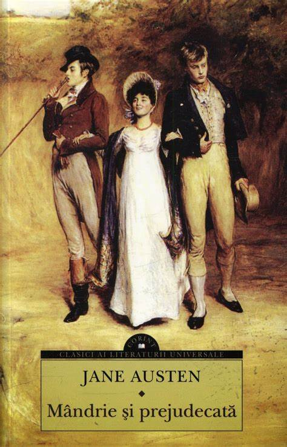

Do you like this book club?
Booktok
Catch up with us in the 'Booktok'—a haven
for passionate readers dedicated to exploring one book
at a time. Dive into our updates, character analyses, and plot
revelations as members share their ongoing journey through our
selected reads. From cherished classics to contemporary
gems, our diverse community delves
deep into the heart of each story, fostering a dynamic
exchange of ideas and perspectives. Join us in unraveling
the mysteries, savoring the nuances, and celebrating the magic
of literature, one update at a time. Let's embark on this literary adventure together!